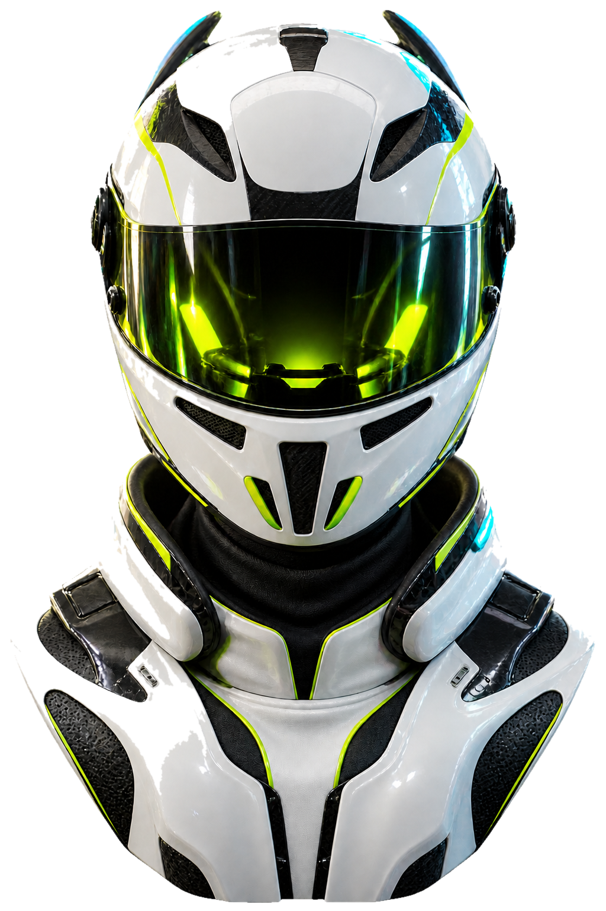

Independent builder.
Open source, self-hosted systems, and a few ideas that refuse to stay still.
Move across the portrait to reveal another layer.
Next projectPERSONAL INDEXqq.sg / always in progress
drag / move / discover
01 / Message from DaFuHao
Make it small.
Make it last.
我喜欢把复杂的东西做成小而清楚的页面：一台服务器、一套状态系统、一个可以真正被使用的工具。
这个主页不是履历表，更像是一张持续展开的地图。你可以从作品、博客或 GitHub 继续往下走。
36+repos
24/7systems
∞ideas
02 / Personal archive
What I
keep.
从真正跑起来的服务，到写下来的一些想法。每个入口都通向一个正在生长的部分。
03 / Find me elsewhere